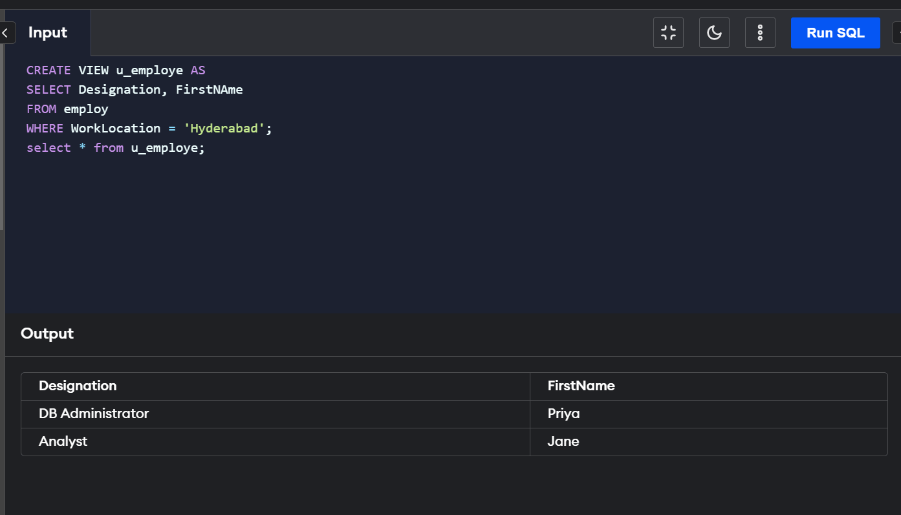
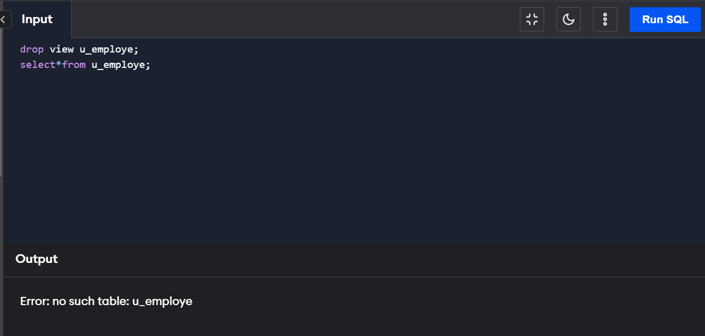

Views
A View in SQL is simply a virtual table created based on a result set of another SQL statement.
Views were introduced to reduce the complexity of multiple tables and deliver data in a simple manner.
Views help us maintain data integrity and provide security to the data, thus acting as a security mechanism.
A database is a collection of tables storing some meaningful data. All the tables are connected with some form
of relation. But the fundamental question that arises here is that why do we need to create so many tables and
not just a single table. Multiple Tables allow storing large amounts of data in a systematic manner, rather than
repeating the same data in a single table. But, we cannot deny the fact that if we want to query some data from
this database, we need to bring all relevant tables together to make a new table.
So, if we observe this issue closely, we have the advantage of storing data in multiple tables on one side,
but on the other side, we have the problem of querying so scattered data. The solution to this problem brings
“SQL Views” into the picture. SQL Views have made managing data and tables relatively easy for users. Views are
virtual tables, i.e., they don't exist in reality in the database, hence don't require any storage in a database.
Virtual Tables also have rows and columns similar to a real table in a database. Such views are simply made
by selecting data(fields) from one or more tables, present in the database, with some conditions for selecting
rows of the table.
Views were introduced to reduce the complexity of the multiple tables and deliver data in a simple manner.
Views hide the complexity of the data in the database as they join and simplify multiple tables into a single
virtual table, which is easier for a user to understand.
Being a virtual table, views take very little storage since the database contains only a view's
statements (definition) and not a copy of all the tables the view is creating. For example, even if we create
multiple views, it still won't take much space compared to a single real table in the database.
Creating a View in SQL
The Views in SQL are created with the CREATE VIEW syntax. Following is the basic syntax to create a VIEW in SQL:
CREATE VIEW view_name AS
SELECT column1, column2...column N
FROM table1, table2...table N
WHERE condition;
To see the data in the view, we can query the view using the following SELECT statement:
SELECT * FROM [view_name];
“CREATE VIEW” is used at the start of the code to initiate the view.
“SELECT” is used to decide which columns to pick from the tables.
With the help of the “FROM” term, we can select the tables from which columns(data) have to be picked.
“Table1..table N” denotes the names of the tables. (Here, for example, we have “Scaler Courses” &
“Author Details” as tables.)
“WHERE” is used to define the condition pertaining to selecting rows.
Deleting Rows Into a View
At regular intervals of the educational courses, feedback was taken from the students. While taking those feedback into account, the team at Scaler wanted to take down a particular course. To tackle this issue, they used one of the functionalities of the views in SQL. A row can be deleted from the view using the DELETE FROM statement. The following is the syntax to remove a row from the view.
DELETE FROM View_name
WHERE condition;

